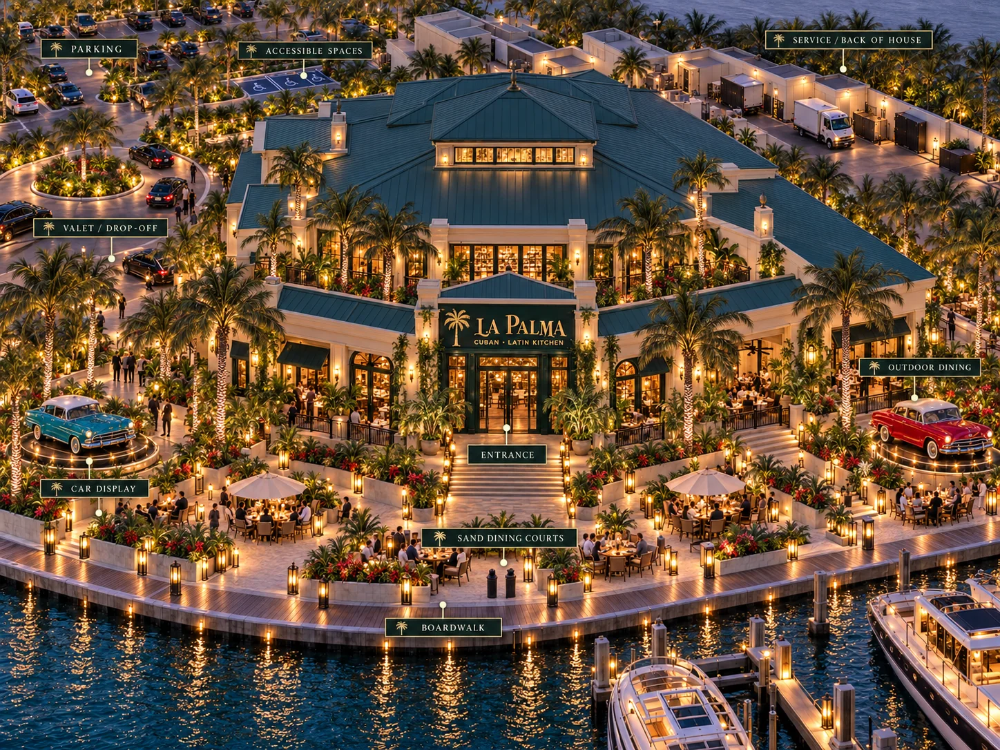
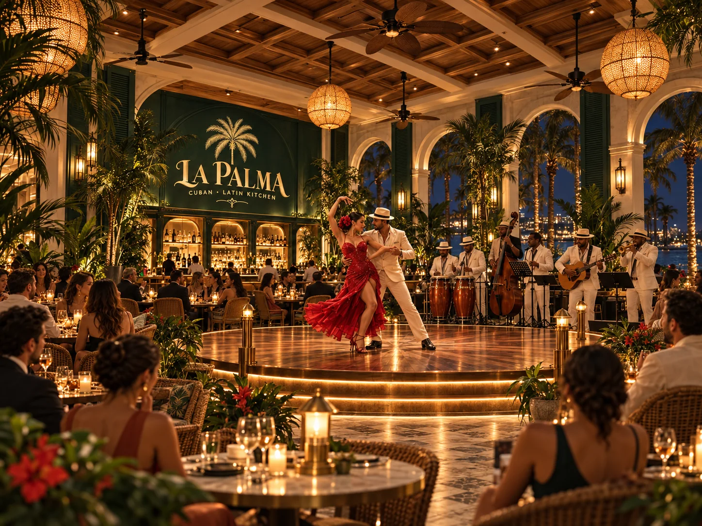

Main Dining
Candlelit tables, Cuban and Latin favorites, and a view into the energy of the room.

From cafecito to the last dance
A waterfront dining room that eases from lunch and golden hour into dinner, live music and dancing after dark.
One place · many moods
La Palma changes gently with the hour — bright by day, glowing at dinner, and livelier after dark when the music begins.
Pressed Cubanos, bowls, Cuban plates and lunch by the water.
Mojitos, rum classics and cafecito as the light softens over the water.
Seafood, lechón, ropa vieja and churrasco over candlelight and conversation.
On select nights, live music and dancing carry the evening well past dinner.
The setting
Inside, the room is layered in deep green, warm brass, woven textures and tropical planting, with the bar and dining room opening toward the water.
Outside, palm-lined terraces and boardwalk tables offer a quieter way to take in sunset, cocktails and dinner along the marina.


After dinner
The dance floor comes alive on Wednesday, Friday and Saturday. Stay at the table, move to the bar, or join the floor when the music finds you.
Make it your evening
Candlelit tables, Cuban and Latin favorites, and a view into the energy of the room.
Palms, boardwalk views and outdoor tables for brunch, golden hour and dinner.
Rum classics, mojitos, espresso cocktails and a seat close to the music.
Salsa, bachata and Latin sets on Wednesday, Friday and Saturday evenings.
Group dinners and celebrations with room to linger over cocktails and dessert.
Arrive at sunset, stay through dinner, and let the night unfold from there.
“Good food. Bright company.
A little closer to the sun.”